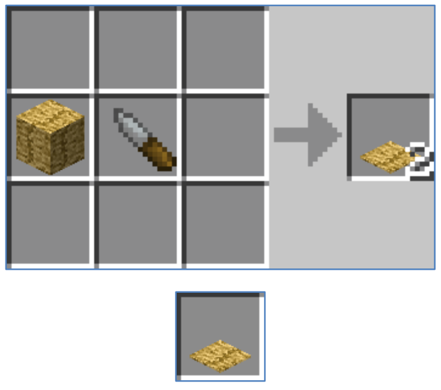

这个wiki将帮助你更好的进行游戏
Author: Bob Yuan
The idea behind this mod came from a suggestion made by a forum member named Djakuta. His suggestion was to create a Grass Mat to dry fruit.
Forum post - http://terrafirmacraft.com/f/topic/8266-grass-mat-dry-fruit/
This is the initial forum post -
This is just an idea for an addon. Is made in the hopes that someone with coding skills like it and make it real.
The main concept is to be able to use a grass mat to create sun dried fruits. Humankind has been drying fruits since stone age. It was a simple way to preserve food for the long winters and also mixed with other ingredients a way to pack food for traveling.
There are several ways that we could achieve this in the game.
The Grass Mat can be made with:
Weaving the mat:
The Dry Fruit:
Mechanics:
Weather effects:
太长不读版：
你可以做一个草垫来风干水果，默认设置下，需要把 160oz 水果放在一个草垫风干 24 小时。但如果下雨的话，就会导致风干失败，并加快变质。
万一下雨的时候，你可以使用另一个草垫去盖住水果，这会停止风干过程，而且依然会让留下的水果变质。
水果干可以保存较长一段时间。

Last Update: Mon Dec 19 2016 15:59:57 GMT+0800 (CST) Source File